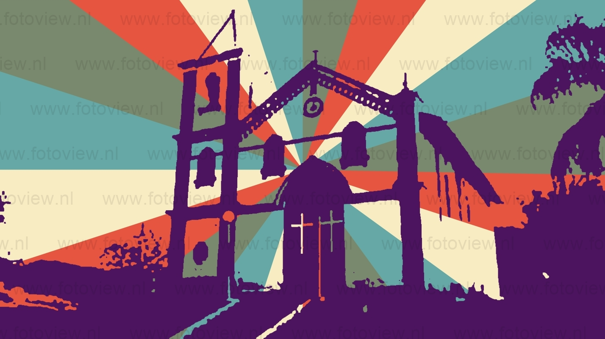

O Município de Itariri foi criado no ano de 1948 através da Lei nº 233. O nome da cidade têm origem indígena e significa: Ita= pedra e riri=miúda, ainda, segundo alguns especialistas riri pode significar “que rolam”, ou seja Itariri quer dizer “Pedras miúdas” ou “Pedras que Rolam”. O movimento que nasceu da magnífica campanha de emancipação realizada em 1947 e liderada pelos senhores Francisco Ribeiro Botelho, Henrique Bojikian, Henrique Ferreira Monteiro, Francisco Benedito Barone, Osmar Ferreira Fortuna, João Aristóteles de Andrade e Heicho Fukuti. A região que em 1880, foi denominada Rio do Azeite, pertencia a freguesia da Prainha, hoje cidade de Miracatu sob jurisdição de Iguape. Joaquim Nardes e Fortunato de Tal, foram os primeiros moradores, e foram atraídos pelas terras férteis, fauna em abundância e belos rios. O local foi marcado definitivamente com a inauguração em 1914, da estrada de ferro Santos-Juquiá. A ferrovia foi construída em terras adquiridas de Joaquim Nardes e no local se construiu uma estação e ao seu redor surgiu a vila. Em 1915, várias famílias de imigrantes japoneses se estabeleceram na região. Dentre elas a família do Sr. Guensho Oshiro. Nessa época José Ferreira Franco, comprou terras de Joaquim Nardes e Benedito Muniz, nas vizinhanças da estação ferroviária. Neste local surgiram as primeiras casas do povoado. Em 1925, foi construída a Capela de São Benedito, em terreno doado por Benedito Muniz. Neste mesmo ano foi construída a primeira escola de ensino primário. Em 1938, criou-se o distrito de Paz, pertencente ao município de Itanhaem, Comarca de Santos. A estação de embarque e desembarque da ferrovia recebeu então o nome de Itariri, que tornou-se popular entre todos aqueles que utilizavam o trem e passavam pelo local
